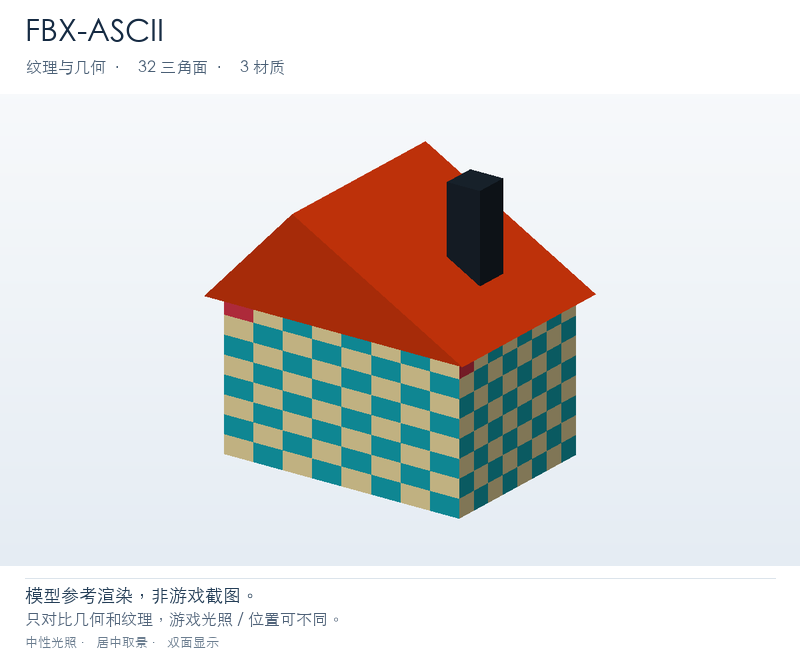
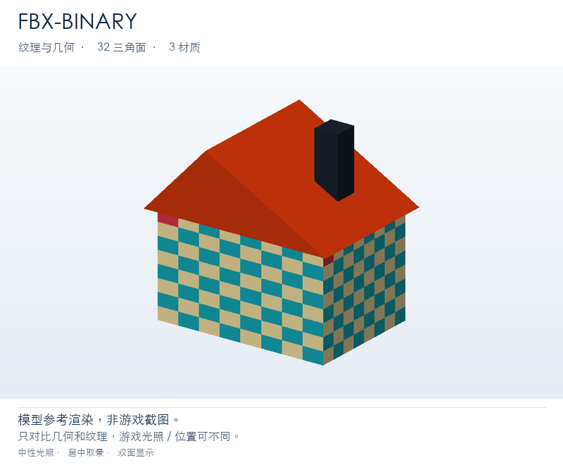
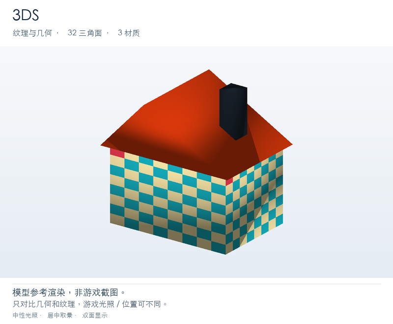
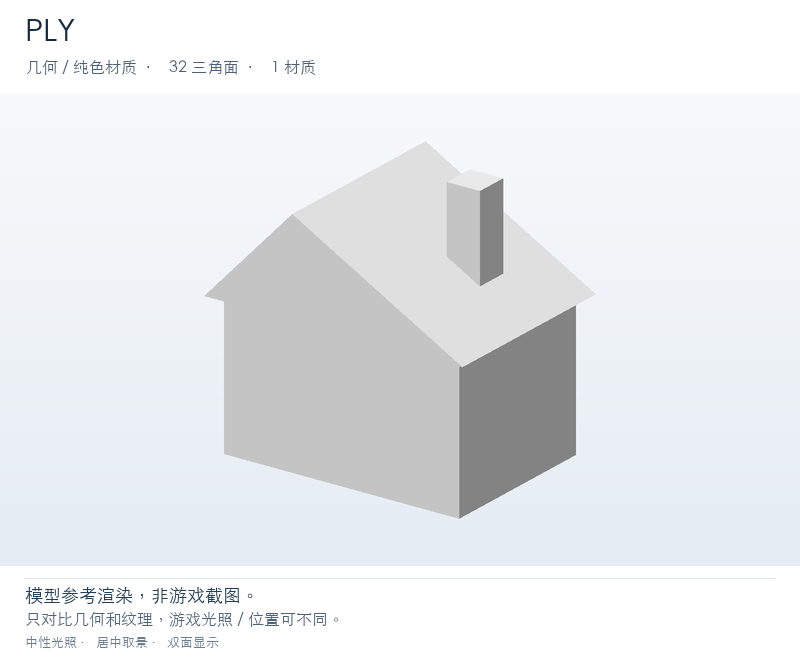
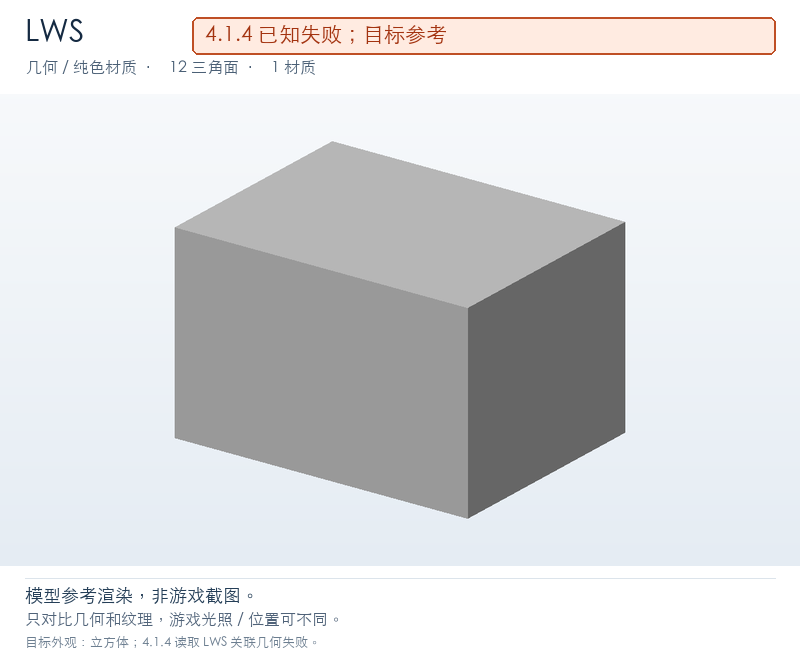
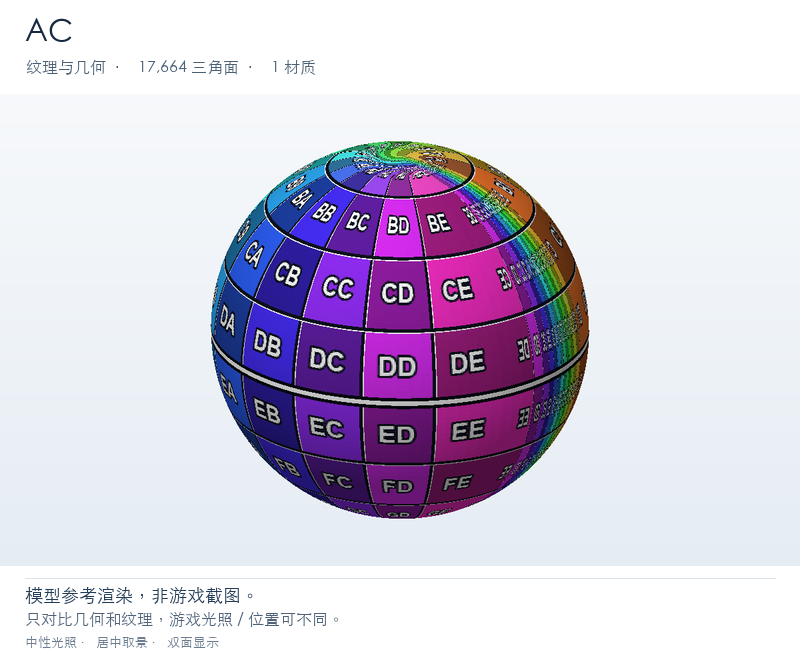
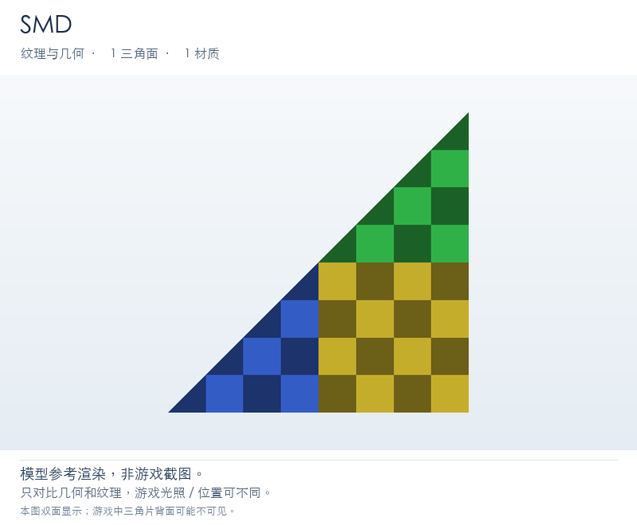

 FBX-ASCII应显示纹理小房子：青绿/米黄棋盘墙面，橙色不对称斜屋顶，屋顶右侧有深灰烟囱。屋脊偏左，烟囱偏右。FBX 7.4 ASCII，UV + 外置 checker.png；与 binary FBX 分开验证。 入口：Models/Common/02_FBX_ASCII/house.fbx
 FBX-BINARY应显示纹理小房子：青绿/米黄棋盘墙面，橙色不对称斜屋顶，屋顶右侧有深灰烟囱。屋脊偏左，烟囱偏右。FBX binary，使用原生 Assimp v5.0.1 从本套自有 OBJ 导出；UV + 外置 checker.png。 入口：Models/Common/03_FBX_BINARY/house.fbx
GLTF应显示纹理小房子：青绿/米黄棋盘墙面，橙色不对称斜屋顶，屋顶右侧有深灰烟囱。屋脊偏左，烟囱偏右。保留同目录 house.bin 和 checker.png；验证 glTF 外置缓冲与外置纹理。 入口：Models/Common/05_GLTF/house.gltf
 3DS应显示纹理小房子：青绿/米黄棋盘墙面，橙色不对称斜屋顶，屋顶右侧有深灰烟囱。屋脊偏左，烟囱偏右。3DS 按格式惯例保存 Z-up；导入后应是烟囱朝上的房子。 入口：Models/Common/07_3DS/house.3ds
 PLY无需贴图：检查几何或纯色材质与彩色小房子相同的几何轮廓：长方体墙体、不对称斜屋顶、偏置烟囱；只测试几何。无材质/贴图，仅检查几何。白色/默认材质正常，不代表导入失败。 入口：Models/Common/08_PLY/house.ply
STL无需贴图：检查几何或纯色材质与彩色小房子相同的几何轮廓：长方体墙体、不对称斜屋顶、偏置烟囱；只测试几何。标准二进制 STL，无材质/贴图，仅检查几何。白色/默认材质正常，不代表导入失败。 入口：Models/Common/09_STL/house.stl
 LWS已知失败 · 图片仅表示模型的目标外观场景中的立方体；本插件不播放源文件的物体位移动画。4.1.4 已知限制：插件内存导入未缓存配套 LWO，会返回 Incomplete / SkeletonMaterial 占位骨架；预检 plugin-io 应为 FAIL。参考图展示正确文件导入的目标立方体，并非当前插件通过。请单独测 LWO。 入口：Models/Rare/lws/move_x.lws
 AC应显示纹理一个带多色经纬 UV 测试贴图的细分球体，有网格线和方向/区域标记；源文件灯光不代表游戏中新建灯光。 入口：Models/Rare/ac/SphereWithLight.ac
 SMD应显示纹理一个带棋盘贴图的三角片，单面；转到背面可能不可见。 参考图使用双面显示；游戏内单面三角片从背面可能不可见。 入口：Models/Rare/smd/triangle.smd